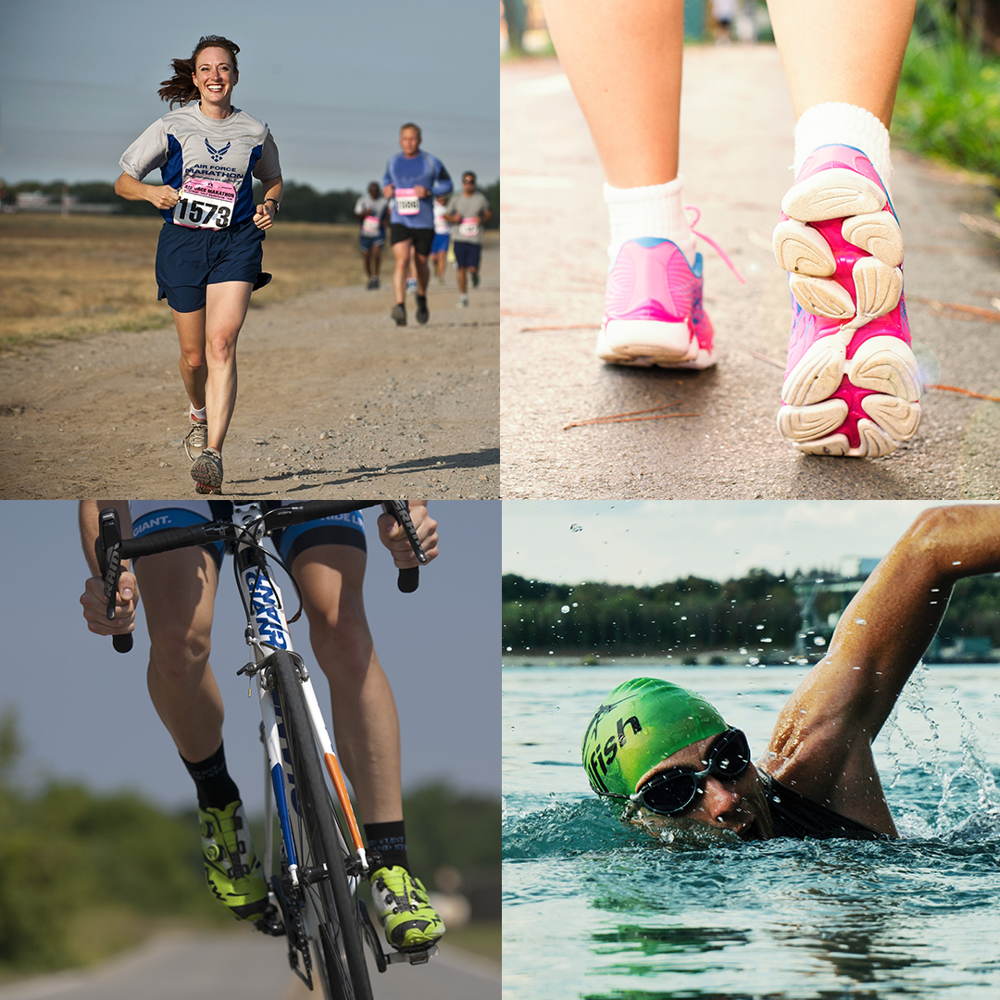
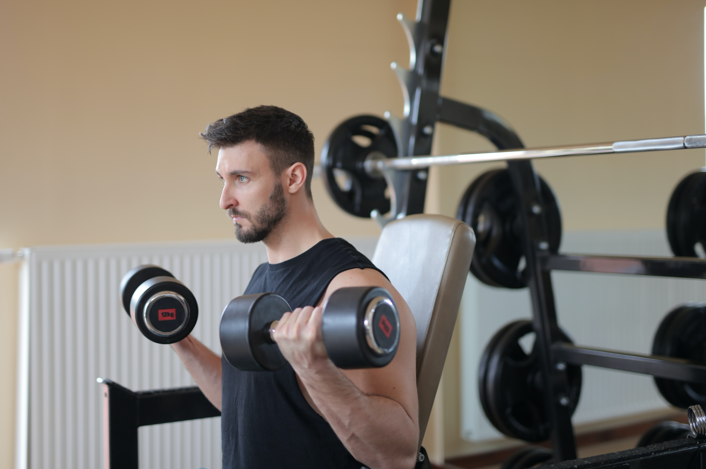
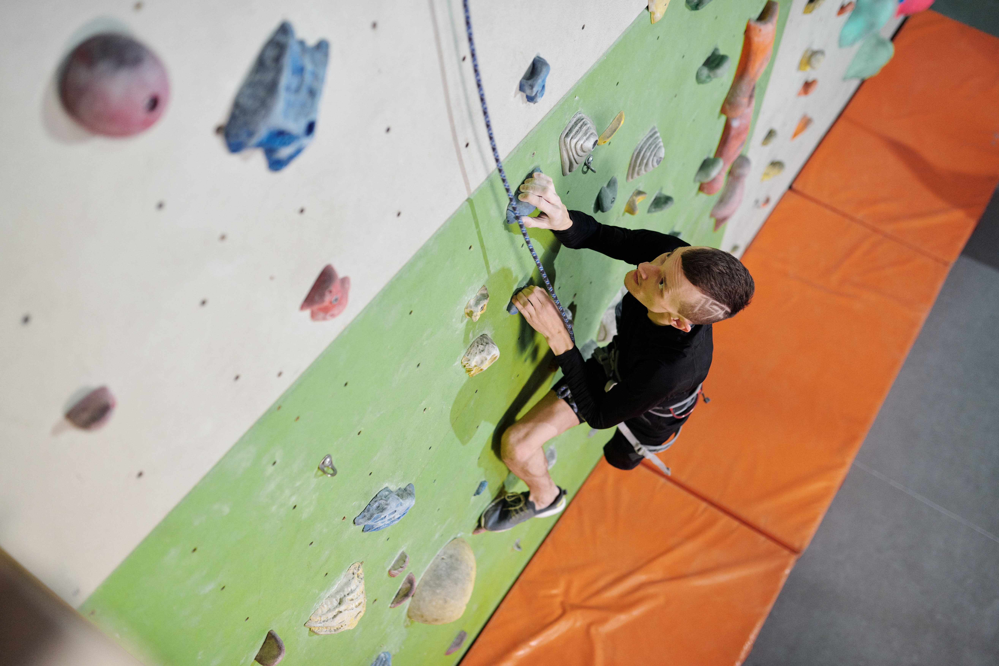
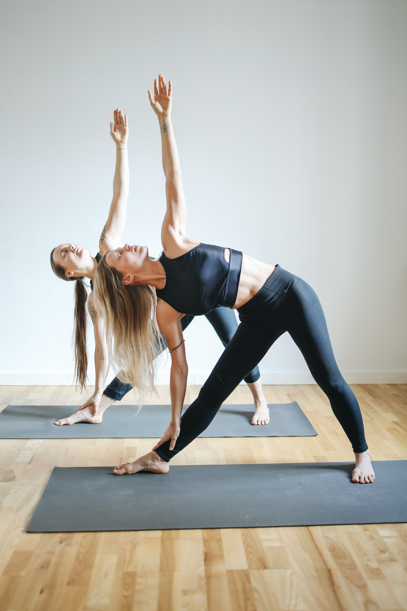

Significance of Physical Activities among Children
Physical activities are anything we do that requires movements of different parts of body consuming energy. This encapsulates any activity regardless of its intensity, and can be performed in any time of the day. This also includes systematic activities and sudden activities.
Variations of Physical Activities
There are 4 types of physical activities namely; aerobic, muscle-strengthening, bone-strengthening, and stretching activities.
Aerobic Activities uses major muscles in arms and legs such as running, swimming, walking, bicycling, dancing, and doing jumping jacks.

Muscle-Strengthening Activities enhances power, strength, and endurance of muscles. This includes doing push-ups, situps, and lifting weights.

Bone-Strengthening Activities helps improve bone performance by focusing on feet, arms, and legs pushing against the bones. These include activities such as running, walking, jumping rope, and lifting weights.

Stretching helps improve your flexibility in order for you to utilize the maximum capability of your joints. Touching your toes, doing side stretches, and doing yoga exercises are examples of stretching.

Benefits of Having Physical Activities
Physical activities have a lot of benefits for the system of any person. These benefits include the following:
- reduce the risk of cardiac problems
- get a composed weight
- lower blood cholesterol level
- lower blood pressure
- make stronger bones, muscles and joints and lower risk of developing bone related diseases
- create a stronger immune system
- feel better – with more energy, a better mood, feel more relaxed and sleep better
- a healthy state of mind.
Long Term Effects
The Centers for Disease Control and Prevention says ongoing exercise can help:
- Control weight
- Reduce risk of cardiovascular disease, type 2 diabetes, metabolic syndrome and some cancers
- Strengthen bones and muscles
- Improve mental health and mood
- Improve your ability to do daily activities and prevent falls
- Increase your chances of living longer